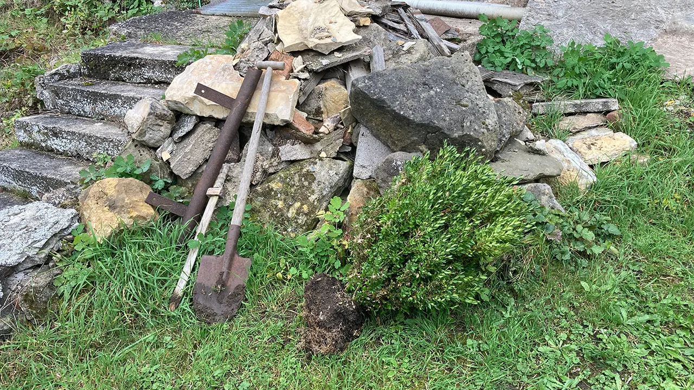
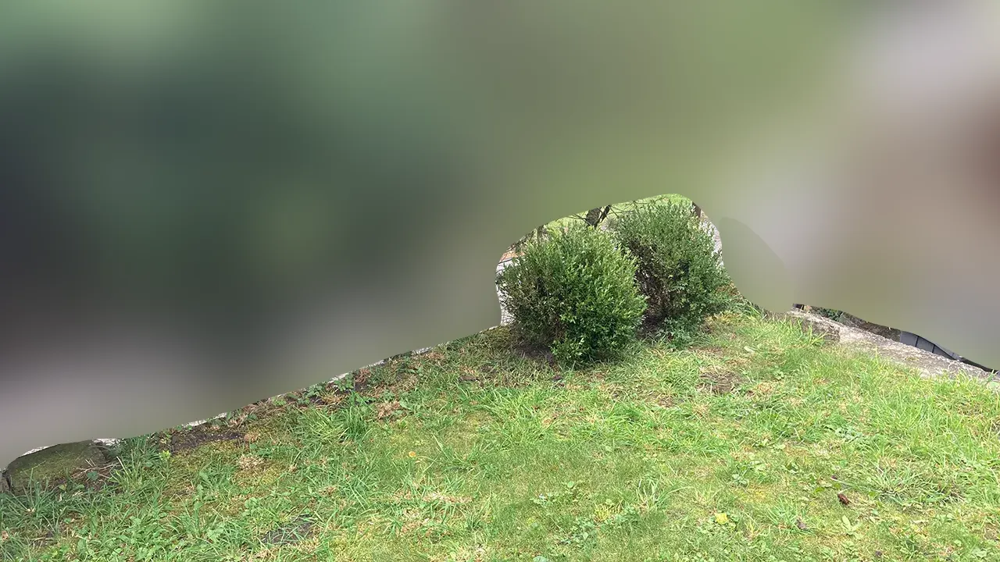
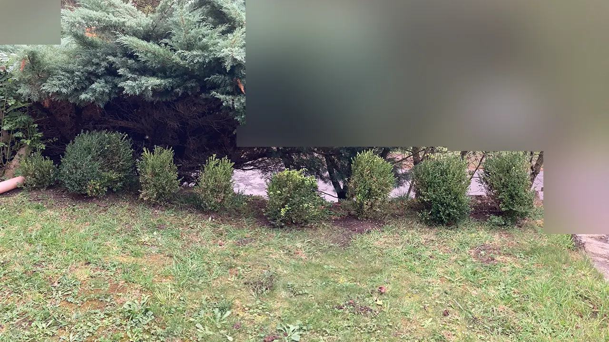

Zvídavý občan
Zvídavý občanZvídavý občan - Zahrada #2 - Instalace Živého Plotu Buxus
Je to již delší dobu, co jsem psal o zahradě. Také píši tento článek s větším zpožděním. 21 dní abych byl přesný. Před 21 dnama jsem snad úspěšně zasadil můj pokus o živý plot. Jelikož moje maminka si chce postavit skleník a v cestě jí bránily její buxusy, tak jsem dostal povolení k tomu je vykopat a přesadit je kam chci. Napadlo mě z nich udělat menší přepážku mezi mojí zahradou a venkovní silnicí. Už teď jsem dobré 2 až 3 metry nad zemí oproti silnici. Ale více zeleně pro oddělení vozovky od mojí zahrady neuškodí.
Jelikož ten den zrovna pršelo, jedná se o 14. října, tak zem byla v skutku měkká, ale také dosti bahnitá. Tudíž se mi relativně dobře kopalo do země, ale měl jsem boty celé od bahna. Jelikož v říjnu bylo relativně teplo, tak zem nebyla nijak zmrzlá a šlo to od ruky. Buxusy jsem první dva trefil tak nějak lidově řečeno od oka. Následně jsem se snažil o vzdálenost 2 stop mezi buxusy. A také jsem se snažil o to, aby byly v rovině. Což lze řešit tak, že bych si vykopal jeden dlouhý příkop, který bych vykopal rovně. Ale v ten moment mě to nenapadlo a také to zní jako dost práce a nepořádku.
 Konečný výsledek vypadá nějak takto. Nejsem s tím 100% spokojen, jelikož je to relativně křivé. Každopádně uvidíme, zda-li se vůbec buxusy chytí a jak porostou v dalších časech. Když se nechytí, tak se nic neděje.